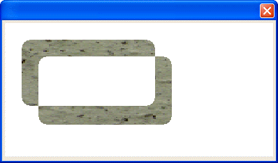

UI_SHAPE_ROUND_RECT()
Syntax
UI_SHAPE_ROUND_RECT( Shape_Name as C, X_Coord as N, Y_Coord as N, Width as N, Height as N, Round_Width as N, Round_Height as N [, Shape_Operation as C ] )
Argument | Description |
Shape_Name | The name of a new or existing shape. |
X_Coord | The horizontal coordinate of the upper left corner of the rectangle. Larger values move right. |
Y_Coord | The vertical coordinate of the upper left corner of the rectangle. Larger values move down. |
Width | The width of the rectangle. |
Height | The height of the rectangle. |
Round_Width | The horizontal stretch of the corner's curve. |
Round_Height | The vertical stretch of the corner's curve. |
Shape_Operation | Optional. Default = erase previous shape. An indication of how to combine the shape with other shapes.
|
Description
The UI_SHAPE_ROUND_RECT() function draws a round cornered rectangle into the shape buffer. You can then use the shape buffer:
to define a new object to write to the bitmap, or
with the CLIP_SHAPE()to limit the portion of the bitmap that can be written on.
 Note : This function is only used in the Code sections of UI_BITMAP_DRAW(), UI_SCREEN_DRAW(), and UI_PRINTER_DRAW().
Note : This function is only used in the Code sections of UI_BITMAP_DRAW(), UI_SCREEN_DRAW(), and UI_PRINTER_DRAW().

Limitations
This function is only used in the Code sections of UI_BITMAP_DRAW(), UI_SCREEN_DRAW(), and UI_PRINTER_DRAW().
Example
The following example combines two round cornered rectangles to make a clipping shape.
ui_bitmap_load("stone", file.to_blob("C:\WINDOWS\Greenstone.bmp")) ui_bitmap_create("test", 4, 2) ui_shape_round_rect("rect", 0, 0, 2, 1, .25, .25) ui_shape_round_rect("rect", .25, .25, 2, 1, .25, .25, "xor") ui_bitmap_draw("test", <<%code% inner_rect(0, 0, 4, 2) clip_shape("rect", .25, .25) bitmap("stone", 0, 0, 4, 2) %code%) ui_dlg_box("", "{image=test}") |
See Also